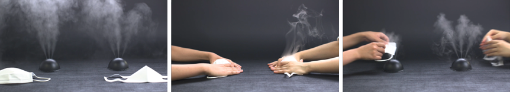
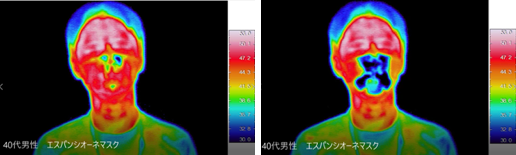
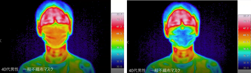
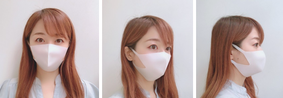
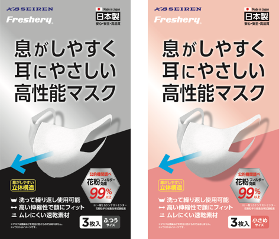

総合繊維メーカーのセーレングループであるKBセーレン株式会社（本社：大阪市北区梅田／代表取締役社長：寺前勝基）は独自の技術で開発した熱可塑性ポリウレタンエラストマーのスパンボンド不織布「エスパンシオーネ®」(※1)を使用した新感覚の不織布マスクを2020年10月8日より発売致します。
■「息がしやすく耳にやさしい高性能マスク」の7つのコンセプト
①通気性
一般不織布マスクの約2倍の通気性で呼吸がしやすい

【蒸気による通気性比較実験】
下部から蒸気を噴出 ⇒ マスクを被せ、どれだけ蒸気が通過するかを検証
⇒ マスクを取り外し、蒸気が噴出しているか確認
左：一般不織布マスク 右：新商品マスク 社内実験にて
②ムレにくさ
通気度が高いため、マスク内温度が上昇しにくく、ムレにくい

- 40代男性
新商品マスク着用での呼吸時のマスク内温度変化
マスク内温度差：約15度

- 40代男性
一般不織布マスク着用での呼吸時のマスク内温度変化
マスク内温度差：約8度
【サーモグラフィ測定によるマスク内温度比較実験】
マスクを着用して1階から3階まで階段を駆け足で昇り降りした直後の呼吸状態を確認
吸い込み時は温度が上がり、吐き出し時には温度が下がる。その差を測定。
温度差が大きい⇒内気と外気をしっかりと交換できている⇒長時間着用してもマスク内温度が上昇しにくくムレにくい。
③耳が痛くなりにくい
全方位約400%の伸縮性を持った極細繊維のポリウレタンを使用しているため、通常のポリウレタン製ゴム紐よりも耳への負担を軽減。
④肌触り
不織布でありながら、繊維径が約10ミクロンの極細繊維を使用しているため、ソフトで優しい布マスクに近い肌触りを実現
⑤フィット感
すき間を作らずにピッタリとフィットし飛沫をブロック

※マスクは感染などを完全に防ぐものではありません。
⑥フィルター性能
布マスクに近い肌触りでありながら、本来の不織布特有のフィルター性能を保有。花粉ろ過効率は99%以上を実現。
※（一財）カケンテストセンター調べ 花粉粒子の捕集効率テスト
⑦耐久性
洗って繰り返し使用可能
※ポリウレタンの特性上、開封後に黄変することがありますが性能に影響はありません。
■商品概要

- 商品名：
- Freshery®(※2) 息がしやすく耳にやさしい高性能マスク
- J A N：
- 4560274453910（ふつうサイズ）
4560274453927（小さめサイズ）
- 入 数：
- 3枚入り
- 価 格：
- 700円
- 素 材：
- ポリウレタン
- カラー：
- ホワイト
- 購入方法：
- 全国の専門店、GMS、HCなどで順次取り扱い開始
他快適リビングショップ、amazon、楽天などネットショップにても順次開始
「Freshery®（フレシェリー）®」「エスパンシオーネ®」はKBセーレンの登録商標です。
(※1)エスパンシオーネ®とは
エスパンシオーネは、KBセーレンが独自の技術で開発した熱可塑性ポリウレタンエラストマーのスパンボンド不織布です。ポリウレタン弾性繊維100％の細い連続フィラメントがランダムに積層した構造をしているため、従来のスパンボンドの特性である通気性やハンドリング性に加えて高い伸縮性（約400％）や柔軟性など多くの優れた特長を有しています。
(※2)Freshery®(フレシェリー®)とは
FresheryはKBセーレンの衣料雑貨製品向けブランドの名称です。
同件に関するお問い合わせ
KBセーレン株式会社
広報担当 吉本
大阪本社 TEL 06-6345-5204
携帯直通TEL 090-4329-6897
masaru.yoshimoto@kb.seiren.com